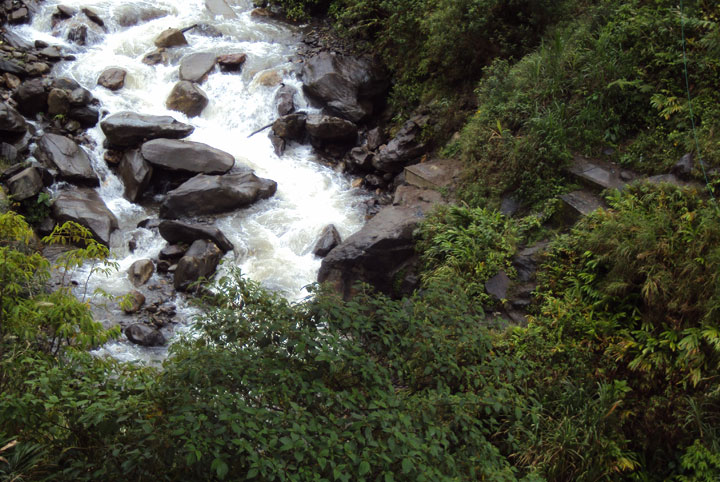
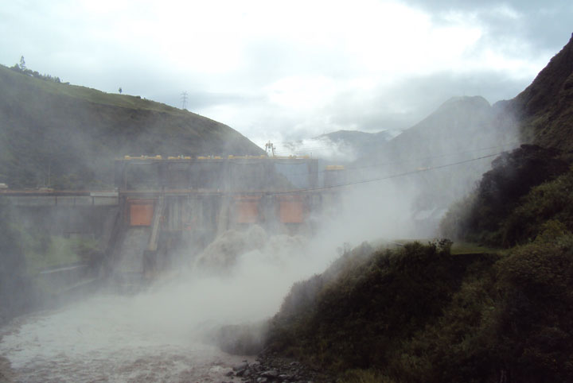

Extensos mosaicos de sembríos de maíz, papas y granos de Tungurahua dibujan parte de esta región que es bañada por aguas heladas de los deshielos de sus volcanes y por aguas termales donde hay hermosos spas y centros de relajación. La mayor parte de su territorio comprende las elevaciones, que van desde los 1500 metros sobre el nivel del mar aproximadamente hasta los 6310 metros del nevado Chimborazo.


Ecuador mi país 2014. Todos los derechos reservados